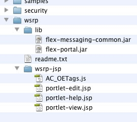

Portal integration¶
Using LiveCycle Data Services, you can deploy Flex applications as local portlets on portal servers that implement the JSR 168 portlet specification or that support Web Services for Remote Portlets (WSRP); this includes JBoss Portal, BEA WebLogic Portal, and IBM WebSphere Portal. The Flex application can be part of a LiveCycle Data Services application (for example, using the Remoting, Messaging, and/or Data Management services) but it does not have to be.
To enable a Flex application to be deployed as a portlet, you need to copy and customize some files included in the LiveCycle Data Services /lcds/resources/wsrp/ directory and then follow the portal server’s specific steps to set up the portlet.
Figure 13. The required LiveCycle Data Services files for deployment on portals.
You need to copy the flex-portal.jar file to your web application’s /WEB-INF/lib/ directory. (If LiveCycle Data Services is not being used on the server, the flex-messaging-common jar file must also be copied to there. ) The flex-portal.jar file contains a GenericFlexPortlet class that handles all WSRP requests and returns appropriate HTML depending upon whether the view, edit, or portlet mode is requested. The LiveCycle Data Services wsrp-jsp folder contains three JSP pages used for the view, edit, and help portlet view modes. You need to copy this wsrp-jsp folder to the root of your web application and customize these pages for your application. When a specific view of the portlet is requested, the GenericFlexPortlet class delivers one of these JSP pages. The portlet-view.jsp contains HTML and JavaScript for loading the application SWF and checking for the necessary version of Flash Player.
Requests for a portlet specify whether the portlet should be maximized, minimized, or normal. The value for this requested window state is passed to the Flex application as a flashvar, and can be accessed as FlexGlobals.topLevelApplication.parameters.PORTLET_WS allowing you to customize the application for the specific window state requested. If a minimized portlet is requested, the GenericFlexPortlet does not return a SWF because the user would not be able to interact with it anyways.
Where to go from here
This article discussed the architecture of Flex and Java applications. For additional information, use the links contained in the article and the following resources: